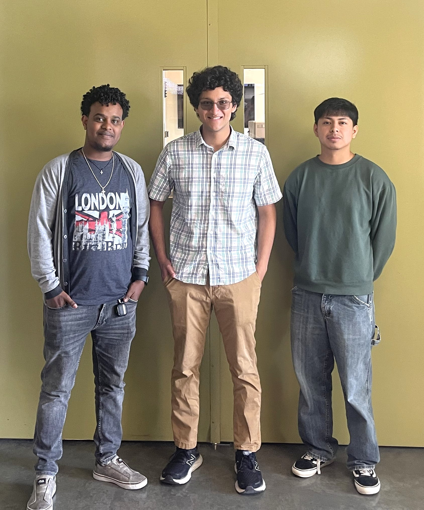

We aim to improve the UCSD student experience by providing a live readout of current parking availability. Students and faculty can use this tool to make better parking decisions and reduce frustration.
Gotta Park Fast is our senior design project for ECE 196 at UC San Diego. We use ultrasonic proximity sensors connected to an ESP32 microcontroller to detect whether parking spots are occupied. The sensor data is sent to a central web server and displayed in real time via our website. This helps commuters know before they arrive whether parking is available.
Team 10
Aron Bariagabr – abariagabr@ucsd.edu
Aatash Pestonjamasp – apestonjamasp@ucsd.edu
Fernando Salgado – fesalgado@ucsd.edu